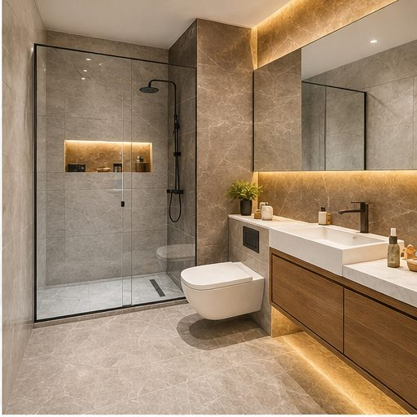
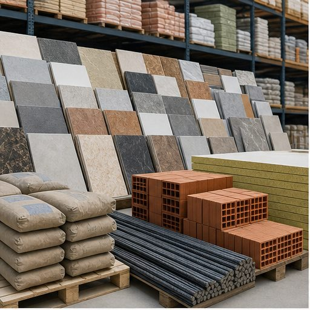

Tadilat
Anahtar teslim tadilatta nelere dikkat edilmeli?
Keşif, bütçe, malzeme seçimi ve iş programı netleştiğinde tadilat süreci daha kontrollü ilerler.
Blog
Proje öncesinde karar vermeyi kolaylaştıran kısa, anlaşılır ve pratik bilgiler.

Tadilat
Keşif, bütçe, malzeme seçimi ve iş programı netleştiğinde tadilat süreci daha kontrollü ilerler.

Peyzaj
Drenaj, zemin, bitki seçimi ve bakım ihtiyacı birlikte değerlendirilmelidir.

Malzeme
Doğru ürün seçimi, uygulama ömrünü ve bakım maliyetlerini doğrudan etkiler.

Hafriyat
Alan ölçümü, zemin durumu, makine erişimi ve atık planı iş başlamadan netleştirilmelidir.